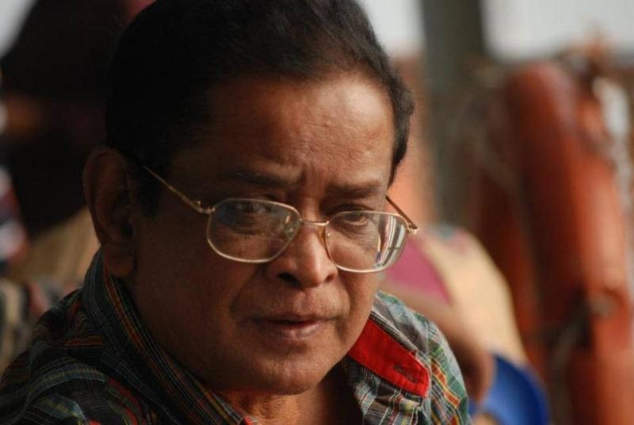

Humayun Ahmed ( 13 November 1948 – 19 July 2012) was a Bangladeshi novelist, dramatist, screenwriter, filmmaker, songwriter, scholar, and professor.His breakthrough was his debut novel Nondito Noroke published in 1972.He wrote over 200 fiction and non-fiction books, many of which were bestsellers in Bangladesh. His books were the top sellers at the Ekushey Book Fair during the 1990s and 2000s.He won the Bangla Academy Literary Award in 1981 and the Ekushey Padak in 1994 for his contribution to Bengali literature.
 About Humayun Ahmed